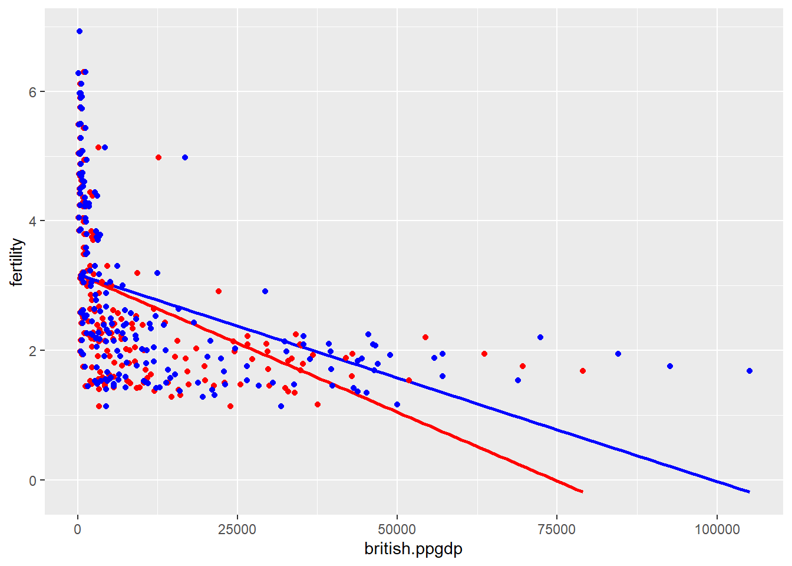

Loading required package: car
Loading required package: carData
Attaching package: 'car'
The following object is masked from 'package:dplyr':
recode
The following object is masked from 'package:purrr':
some
Loading required package: effects
lattice theme set by effectsTheme()
See ?effectsTheme for details.
There are very few observations with gross national product per person between 20,000 and 100,000 when compared to those below 20,000 (in addition to the huge dip in fertility). Since the above graph does not seem to exhibit a linear relationship, it is not plausible for it to have a straight-line mean function.
We can see that as log(ppgdp) increases, log(fertility) decreases linearly. So, we can say that the relationship between these two variables is linear and a simple linear regression model would be plausible.
Question 2
a
The slope gets divided by 1.33 due to the conversion from US Dollar to British Pound. So the slope of the British prediction equation will be ~25% less than the US prediction equation. We can also observe this from the below graph, where the British equation is represented in red and the US in blue.
Code
UN11$british.ppgdp <- UN11$ppgdp/1.33ggplot() +geom_smooth(data=UN11, aes(x = british.ppgdp, y = fertility), method ="lm", se =FALSE, color ="red") +geom_smooth(data=UN11, aes(x = ppgdp, y = fertility), method ="lm", se =FALSE, color ="blue") +geom_point(data=UN11, aes(x = british.ppgdp, y = fertility), color ="red") +geom_point(data=UN11, aes(x = ppgdp, y = fertility), color ="blue")
`geom_smooth()` using formula = 'y ~ x'
`geom_smooth()` using formula = 'y ~ x'

b
The correlation between the explanatory variable and the response will not change as both will increase 1.33x
From the matrix, we can see that the first three locations - APMAM, APSAB and APSLAKE - are strongly correlated with each other. Similarly, the next three location - OPBPC, OPRC and OPSLAKE - are also correlated with each other. However, the first three locations do not share a strong correlation with the response - BSAAM, whereas the next three locations do. This implies that using one of the last three locations will give a better fit/ predictions for the stream runoff volume. On close inspection, we can further say that OPSLAKE might be a better choice among the last three locations to predict BSAAM.
All of them have a positive correlation but with different magnitudes. Quality, helpfulness and clarity seem to have a linear relationship with one another with a strong positive correlation. Quality, with easiness and rater interest has a positive correlation but is weak (weaker for rater interest). The plot for easiness and rater interest seems flat amongst all, implying almost no (very weak) correlation.
From the above visualization, we can say that as the number of hours of TV watching increases, the high school GPA of the student decreases.
b
In (i), ~33.6% of the variance in political ideology is explained by religiosity and with 1 unit increase in religiosity, political ideology increases approximately by 0.97 units. We can also see that the p-value for (i) is way below the significance threshold of 0.05 and is therefore statistically significant. Similarly, in (ii), only ~7.2% of the variance in high school GPA is explained by the hours of TV watching. As expected, the p-value for (ii) is less than the usual 0.05 significance threshold but is close to it so it does not exhibit strong statistical significance.
Source Code
---title: "Homework 3 - Prahitha Movva"author: "Prahitha Movva"description: "The third homework"date: "10/31/2022"format: html: toc: true code-fold: true code-copy: true code-tools: truecategories: - hw3 - regression - correlation - covariance---```{r}library(readxl)library(tidyverse)library(dplyr)library(stats)library(alr4)library(smss)knitr::opts_chunk$set(echo=TRUE, warning=FALSE)```## Question 1### 1.1.1The predictor is ppgdp and the response is fertility because we are studying the dependence of fertility on ppgdp.### 1.1.2```{r}ggplot(data=UN11, aes(x=ppgdp, y=fertility))+geom_point()```There are very few observations with gross national product per person between 20,000 and 100,000 when compared to those below 20,000 (in addition to the huge dip in fertility). Since the above graph does not seem to exhibit a linear relationship, it is not plausible for it to have a straight-line mean function.### 1.1.3```{r,echo=TRUE}ggplot(data=UN11, aes(x=log(ppgdp), y=log(fertility)))+geom_point()```We can see that as log(ppgdp) increases, log(fertility) decreases linearly. So, we can say that the relationship between these two variables is linear and a simple linear regression model would be plausible.## Question 2### aThe slope gets divided by 1.33 due to the conversion from US Dollar to British Pound. So the slope of the British prediction equation will be ~25% less than the US prediction equation. We can also observe this from the below graph, where the British equation is represented in red and the US in blue.```{r}UN11$british.ppgdp <- UN11$ppgdp/1.33ggplot() +geom_smooth(data=UN11, aes(x = british.ppgdp, y = fertility), method ="lm", se =FALSE, color ="red") +geom_smooth(data=UN11, aes(x = ppgdp, y = fertility), method ="lm", se =FALSE, color ="blue") +geom_point(data=UN11, aes(x = british.ppgdp, y = fertility), color ="red") +geom_point(data=UN11, aes(x = ppgdp, y = fertility), color ="blue")```### bThe correlation between the explanatory variable and the response will not change as both will increase 1.33x```{r}UN11$british.ppgdp <- UN11$ppgdp/1.33cor(UN11$british.ppgdp, UN11$fertility)cor(UN11$ppgdp, UN11$fertility)```## Question 3```{r}data(water)pairs(water)```From the matrix, we can see that the first three locations - APMAM, APSAB and APSLAKE - are strongly correlated with each other. Similarly, the next three location - OPBPC, OPRC and OPSLAKE - are also correlated with each other. However, the first three locations do not share a strong correlation with the response - BSAAM, whereas the next three locations do. This implies that using one of the last three locations will give a better fit/ predictions for the stream runoff volume. On close inspection, we can further say that OPSLAKE might be a better choice among the last three locations to predict BSAAM.```{r}summary(lm(water$BSAAM ~ water$OPBPC, data=water))$adj.r.squaredsummary(lm(water$BSAAM ~ water$OPRC, data=water))$adj.r.squaredsummary(lm(water$BSAAM ~ water$OPSLAKE, data=water))$adj.r.squared```## Question 4```{r}data(Rateprof)head(Rateprof)rates <- Rateprof %>%select(quality, helpfulness, clarity, easiness, raterInterest)pairs(rates)```All of them have a positive correlation but with different magnitudes. Quality, helpfulness and clarity seem to have a linear relationship with one another with a strong positive correlation. Quality, with easiness and rater interest has a positive correlation but is weak (weaker for rater interest). The plot for easiness and rater interest seems flat amongst all, implying almost no (very weak) correlation.## Question 5```{r}data(student.survey)pi.clean <-as.numeric(student.survey$pi)re.clean <-as.numeric(student.survey$re)model.i <-lm(pi.clean ~ re.clean, data=student.survey)summary(model.i)model.ii <-lm(hi ~ tv, data = student.survey)summary(model.ii)```### a```{r}ggplot(data=student.survey, aes(x=re, y=pi)) +geom_jitter(data=student.survey, aes(x=re, y=pi), color="blue") +geom_abline(intercept=0.9308, slope=0.9704) +geom_smooth(method='lm')```From the above visualization, we can also say that as religiosity increases, political ideology becomes more conservative.```{r}ggplot(data=student.survey, aes(x=tv, y=hi)) +geom_point(data=student.survey, aes(x=tv, y=hi), color="blue") +geom_abline(intercept=3.441353, slope=-0.018305) +geom_smooth(method='lm')```From the above visualization, we can say that as the number of hours of TV watching increases, the high school GPA of the student decreases.### bIn (i), ~33.6% of the variance in political ideology is explained by religiosity and with 1 unit increase in religiosity, political ideology increases approximately by 0.97 units. We can also see that the p-value for (i) is way below the significance threshold of 0.05 and is therefore statistically significant. Similarly, in (ii), only ~7.2% of the variance in high school GPA is explained by the hours of TV watching. As expected, the p-value for (ii) is less than the usual 0.05 significance threshold but is close to it so it does not exhibit strong statistical significance.